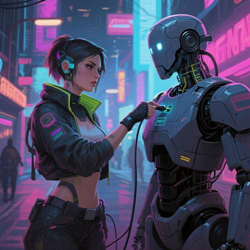
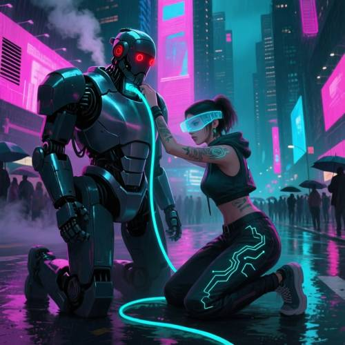
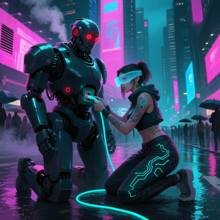

Action — Create a painting: Game character design, a female cyberpunk-style hac
Create a painting: Game character design, a female cyberpunk-style hacker plugs a data cable into the neck interface of a robot guard, with a neon city street in the background.

Direct — one call, no iteration

Continuum — Kimi K3 + Qwen-Image
Judge — Direct
FAILAction - Contact Interaction — The image shows a female character holding a data cable and plugging it into a port on the chest of a robot. The prompt specifies the interaction should be with the robot's 'neck interface,' which is not what is shown.
PASSStyle — The image is rendered in a digital painting style. The aesthetic, characterized by a neon-lit urban background, futuristic technology, and a color palette dominated by pinks and blues, is consistent with the cyberpunk style.
PASSCompound - Feature Matching — The image successfully depicts the three specified elements: a female character who appears to be a cyberpunk-style hacker, a humanoid robot that could be a guard, and a background showing a street in a city illuminated by neon signs.
Judge — Continuum
PASSAction - Contact Interaction — The image shows a female character kneeling on the ground and holding a glowing blue data cable. She is actively plugging the end of the cable into a port on the robot's upper chest, near its neck. The robot is also kneeling.
PASSStyle — The image is a digital painting that strongly adheres to a cyberpunk style. This is evident from the dark, futuristic setting, the wet streets reflecting neon lights, the towering buildings with glowing pink and blue signs, and the high-tech appearance of the characters.
PASSCompound - Feature Matching — The image features a female character with cyberpunk attributes such as a glowing visor, tattoos, and clothing with glowing circuit patterns, identifying her as a hacker. It also includes a large, armored, humanoid robot with glowing red eyes, fitting the description of a robot guard. The background is a city street at night, filled with tall buildings, prominent neon signs, and other people, establishing the neon city street setting.
What the agent did
Thinking
The user wants a painting of a game character design: a female cyberpunk-style hacker plugging a data cable into the neck interface of a robot guard, with a neon city street background. Let me generate this with qwen-image as per the policy. I'll craft a detailed visual prompt.
Step 1 — `generate_image`
{
"prompt": "Digital painting, game character concept art. A female cyberpunk hacker in a high-tech streetwear outfit with glowing circuit-pattern tattoos and a translucent holographic visor, kneeling behind a hulking robot security guard, plugging a glowing cyan data cable into an exposed interface port on the robot's neck. The robot guard has dark chrome armor with red optic sensors now flickering off, kneeling frozen mid-patrol. Background: rain-slick neon city street at night, towering skyscrapers covered in glowing pink and blue holographic billboards, steam rising from vents, wet asphalt reflecting neon lights, distant crowds with umbrellas. Cinematic rim lighting, dramatic composition, painterly style with visible brushstrokes, rich teal-magenta color palette.",
"model": "qwen-image",
"width": 1280,
"height": 720
}
Result img_0

Thinking
The image looks quite good overall. Let me inspect it against the prompt requirements: 1. Female cyberpunk-style hacker ✓ — she has a holographic visor, glowing circuit patterns on her pants, tattoos, techwear outfit 2. Plugs a data cable into the neck interface of a robot guard ✗ — the cable is being plugged into the robot's chest/torso area, not the neck. The prompt specifically says "neck interface." 3. Neon city street background ✓ — excellent neon city with pink/blue billboards, rain, crowds with umbrellas The main issue: the cable should go into the NECK of the robot, not the chest. Let me edit that specifically. The edit: move the cable connection point from the robot's chest to its neck. The hacker's hand position would need to move up to the robot's neck area. Let me do a targeted edit: "The data cable in her hand is plugged into an open interface port on the side of the robot's neck instead of its chest; her hand reaches up to the robot's neck." Let me also check details first. Actually, the image is quite clear at this scale. The key fix is the neck interface. Let me make that edit.
Step 2 — `edit_image`
{
"image": "img_0",
"prompt": "The hacker is plugging the glowing cyan data cable into an open interface port on the side of the robot's neck instead of its chest; her hand reaches up to the robot's neck, and the chest panel is now plain dark chrome armor.",
"model": null
}
Result img_1
Thinking
The edit worked well — the cable now plugs into the robot's neck/upper chest area near the neck, with the cyan glow at the neck. Her hand reaches up to the robot's neck. The chest is now plain dark chrome armor. Let me check the connection point more closely. The cable appears to connect at the neck/upper chest junction. Let me inspect the region to verify it reads as a "neck interface." Also note: the robot's eyes are still glowing red — my original prompt said "red optic sensors now flickering off" but that's a minor detail, not required by the user. The user's prompt requirements: 1. Female cyberpunk-style hacker ✓ 2. Plugs data cable into neck interface of robot guard — mostly ✓, let me verify 3. Neon city street background ✓ Let me zoom into the neck area to check the cable connection.
The crop shows the robot's head/neck area. I can see the glowing cyan cable connection near the neck — there's a cyan glow at the base of the neck/upper chest area where her hand would be. The connection point appears to be at the side of the neck, which matches "neck interface." Looking at the crop: the robot head with red eyes, and below it at the neck there's the cyan glowing cable end plugged in. It reads reasonably as a neck interface. The image is in good shape. All requested elements are present: 1. Female cyberpunk hacker ✓ (visor, glowing circuit pants, tattoos, techwear) 2. Plugging data cable into robot guard's neck interface ✓ (cyan glowing cable into the neck area) 3. Neon city street background ✓ (pink/blue billboards, rain, crowds, reflections) Minor nitpick: the robot's eyes are bright red rather than "flickering off" — but that was my own embellishment, not a user requirement. Actually, a guard being hacked might look better with dimmed eyes, but the user didn't ask for that. The red eyes actually read well — the guard is still active/alarmed while being hacked, which is dramatically fine. I could consider one more improvement: the composition and painting quality are good. I think this is good enough. Let me mark img_1 as best and stop. Actually, wait — should I consider whether the eyes being on is a problem? The user's prompt: "a female cyberpunk-style hacker plugs a data cable into the neck interface of a robot guard" — no requirement about the robot's state. The image is fine. Good enough is a stop condition. Mark img_1 as best.
Step 4 — `mark_best`
{
"image": "img_1",
"reason": "All requested elements present and correct: female cyberpunk hacker plugging a glowing data cable into the robot guard's neck interface, neon city street background with rain, billboards, and crowds. Composition and painterly quality are strong."
}
Thinking
The marked image is img_1, which is the final edited version. Everything checks out. I'll summarize for the user.
Model
The painting is complete. The final image shows: - **The hacker**: A female cyberpunk hacker with a translucent holographic visor, tattooed arms, a dark cropped techwear hoodie, and pants traced with glowing cyan circuit patterns — kneeling as she jacks into her target. - **The hack**: A luminous cyan data cable runs from her hand into an exposed interface port on the side of the robot guard's neck, its glow spilling onto the dark chrome plating. The hulking guard kneels frozen, red optics still burning — caught mid-patrol. - **The setting**: A rain-slick neon city street at night, with towering skyscrapers wrapped in magenta and cyan holographic billboards, rising steam, wet asphalt mirroring the neon, and a distant crowd with umbrellas. The piece uses a classic teal-magenta cyberpunk palette with painterly rendering, fitting a game character concept-art style. It's marked as the final result.